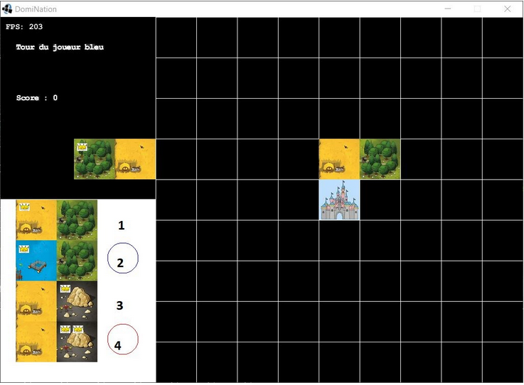

Ce projet avait pour but la création d'un site de bout en bout. Le site devait être écolo et avoir un lien avec l'ISEP.
Avec notre groupe de 6 personnes, nous avons décidé de créer Coin'Isep qui est un leboncoin avec deux particularités :
- Une partie de l'argent est donné à une association (minimum de 5% du prix et ce pourcentage est modifiable)
- Les rendez-vous se font avec l'intermédiaire d'un administrateur
Au début, nous avons dû pitcher le projet. Une fois validé, nous avons créé plusieurs personas correspondant aux différents acteurs du site.
Puis nous avons réalisé un impact mapping, le story mapping et enfin les différentes Users stories.
Ce n'est qu'après cela où nous avons pû commencer le développement du site. Le site à été codé en Java et voilà la page de planning où un utilisateur peut prendre un RDV.
Si vous voyez des ressemblances avec ce site, c'est tout à fait normal car je m'en suis inspiré. C'est d'ailleurs avec ce projet que j'ai pu découvrir Bootstrap.
Sur ce projet, nous étions deux pour analyser les données GTFS du Quebec. Il s'agit de données publiques des transports en commun qui sont recencés
ici.
Vite fait, ces données contiennent entre autres les stations d'une ville, et tous les trajets passant par ces stations.
Nous avons utilisés les données du quebec pour les retranscrire dans un graphe pondéré (avec la distance entre deux arrêts desservis comme le poids).
Puis nous avons utilisé l'algorithme de Dijkstra pour déterminer le chemin le plus court entre deux stations. Tout les algorithmes ont été créés à partir de zero
(bon on avait quand même vu la recherche des chemins en cours, cours qui étaient à distance d'ailleurs à cause du corona).
Et oui je mets vraiment tout ce qui me passe par la tête sur ce site!
Bref voilà à quoi ressemble le graphe que nous avons réalisé en le comparant avec celui donné officiellement par la ville Quebec.
J'aurais pu mettre les graphes côte à côte mais j'aime bien le carrousel.
On peut voir qu'il y a des trajets assez longs sans arrêts sur notre graphe résultant et non présents sur le graphe officiel.
Ce n'est pas un bug, ces trajets sont bien présents.
Sinon, le projet à été réalisé en Java avec des tests en utilisant Junit.
Ce projet avait pour but la création d'un éditeur d'images en utilisant la bibliothèque OpenCV.
Ici le titre est bien assez explicite. Nous avons créé une toolbox reliée à des fonctions qui modifient une image.
Ce projet avait pour but la création d'un jeu de société par groupe de trois.
Le jeu consiste en une multitude de dominos contenant deux tuiles que l'on peut poser sur un plateau avec
certaines contraintes...
Nous avons aussi réaliser une interface graphique permettant de tourner un domino, de le déplacer, de le placer, de choisir son prochain domino et de voir son score.
Le jeu peut se jouer à plusieurs et une IA à même été implémentée (mais elle n'était pas très forte). Le jeu à été codé en java orienté objet.
Pour une idée de ce à quoi ressemble le jeu, voici une petite capture d'écran.

class="mb-1">Ce projet avait pour but la gestion de capteurs dans une maison connectée. Il a été réalisé en équipe de 6
Ce projet a mélangé beaucup de matières. Nous avons utilisé une carte TIVA auquelle on a ajouté des capteurs et des actionneurs.
Il y a ensuite une communication bluetooth pour donner les valeurs des capteurs et réccupérer les ordres de l'actionneur.
Tout cela est accecible via un site que nous avons réalisé. On y réccupère les valeurs des capteurs et on peut préparer les valeurs des actionneurs.